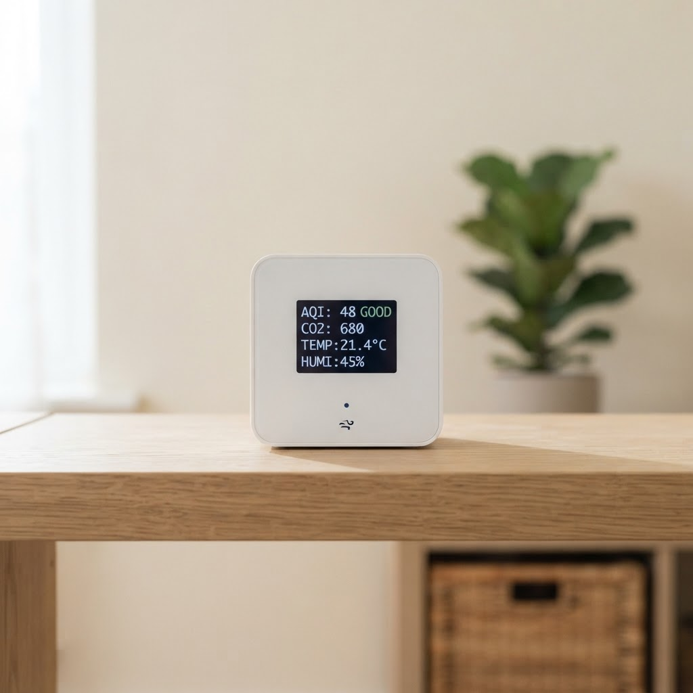
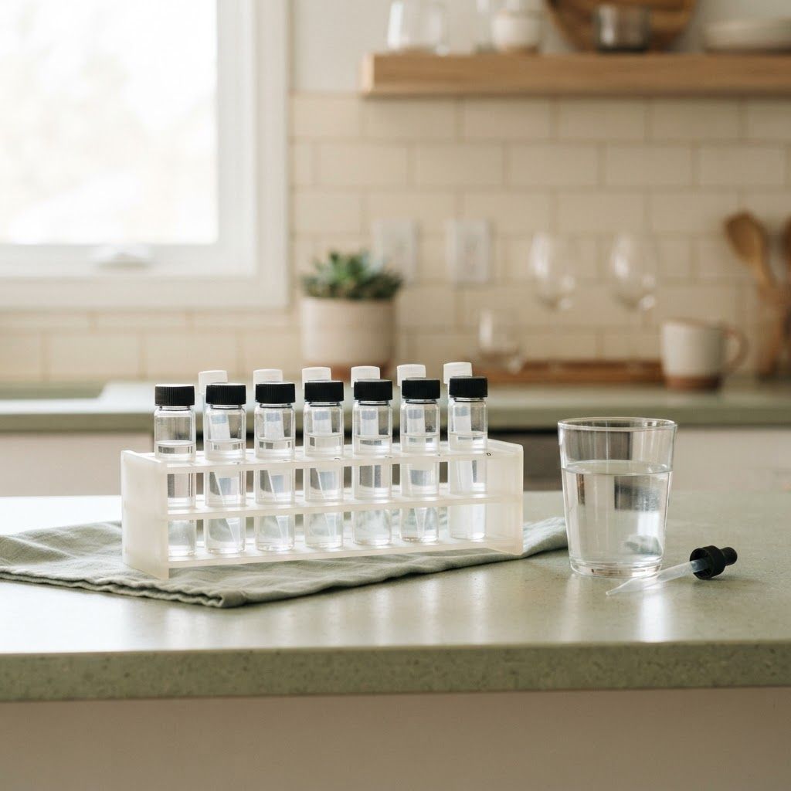
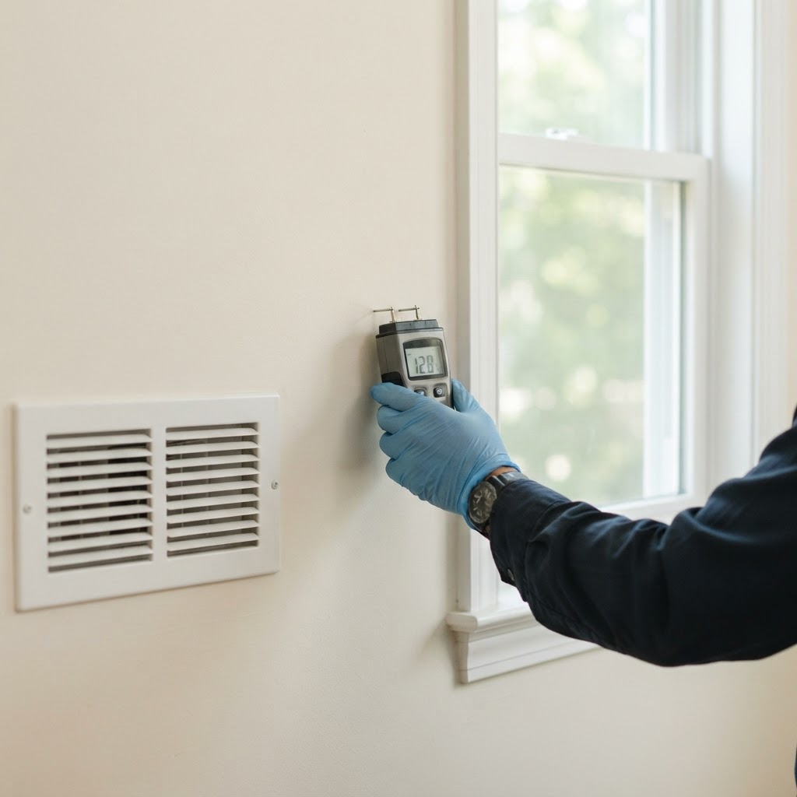
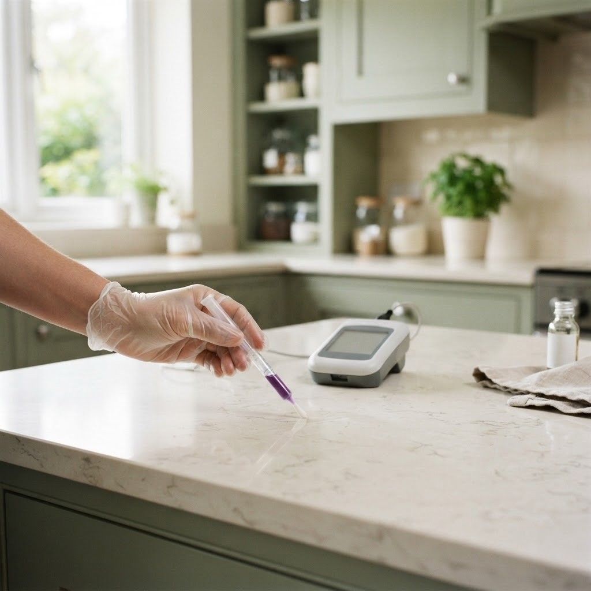
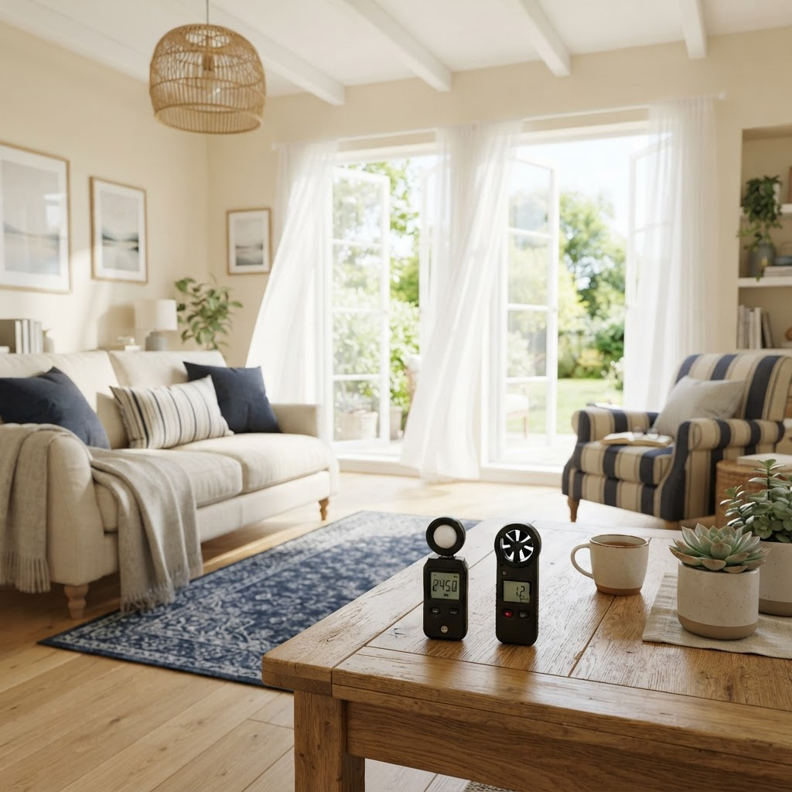

A complete view of your indoor environment
We assess five core categories using approved monitoring devices and laboratory methods, then present the findings in a structured, doctor-friendly report.

Air Quality
Indoor air can hold particles, gases, and moisture that affect breathing, sleep, and comfort. Measuring these factors helps identify sources of irritation and supports decisions about ventilation, filtration, and everyday habits.
- PM2.5
- PM10
- CO2
- TVOCs
- Formaldehyde
- CO
- Temperature
- Humidity

Water Quality
Household water is used for drinking, cooking, and bathing every day. Testing its chemical and microbiological characteristics helps identify potential concerns and supports choices about filtration and treatment.
- pH
- TDS
- Hardness
- Residual Chlorine
- Water Microbiology
- Heavy Metals

Mold & Allergens
Moisture, mold, and common allergens can affect people with sensitivities, allergies, or respiratory conditions. Assessing these factors helps locate hidden dampness and understand potential exposure within the home.
- Moisture Assessment
- Mold Count
- Aspergillus
- Dust Mites
- HVAC Microbiology

Surface & Hygiene
Frequently touched and food-related surfaces can carry residues that are easy to overlook. Hygiene testing offers an objective look at cleanliness across key areas of the home.
- ATP Hygiene Testing
- Kitchen Surfaces
- Bathroom Surfaces
- Refrigerator Surfaces
- AC Vents

Indoor Environment
Ventilation, noise, and lighting shape day-to-day comfort and wellbeing. Measuring these factors helps create spaces that feel calmer, brighter, and better ventilated.
- Ventilation (Airflow / ACH)
- Noise Levels
- Lighting (Lux)
- Indoor Comfort
See it all in one report
Each category is combined into a single structured assessment you can share with your doctor.
Explore Test Packages